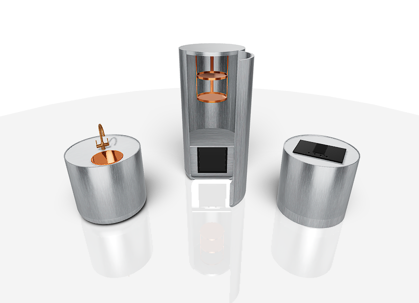
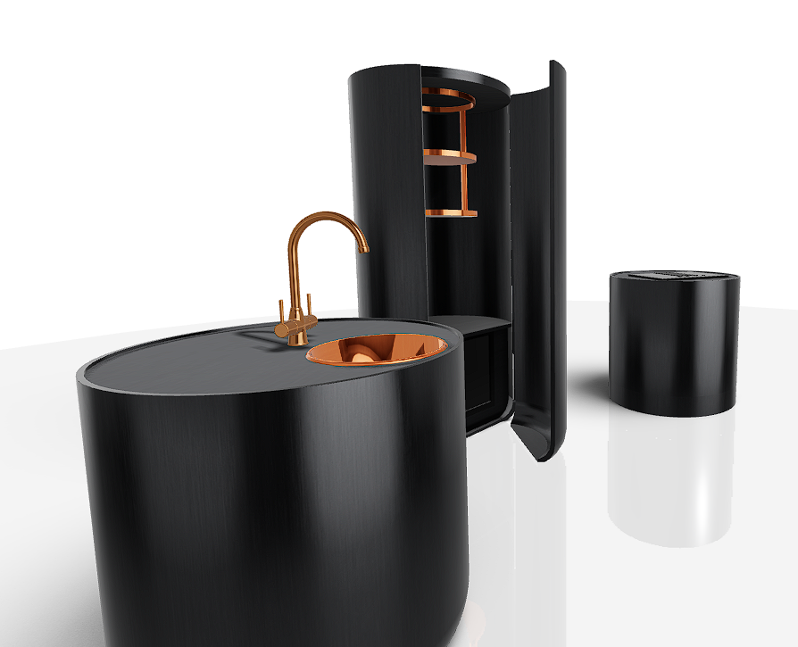
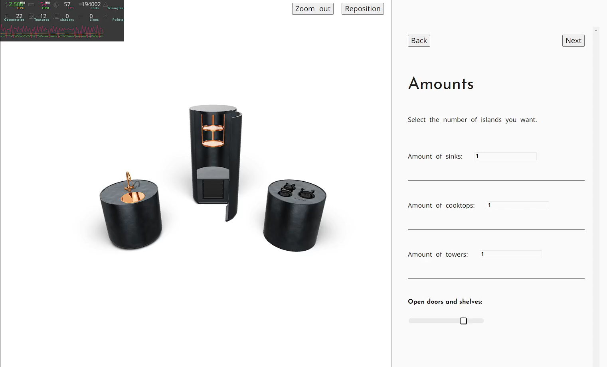

Na een succesvolle start van mijn stage bij Flux, waarin ik het begin van een 3D-configurator voor keukens ontwikkelde, was het tijd om de app verder uit te breiden en te verfijnen. In deze blogpost vertek ik over de afgelopen twee weken, waarin ik veel heb geleerd en nieuwe uitdagingen ben aangegaan.
Ik ben eerst begonnen met alle modellen te maken die ik nodig heb voor de volledige configurator. Ik heb dus alle modellen zelf gemaakt en geoptimaliseerd. Behalve de kranen en de vuren, die heb ik van Sketchfab gehaald, maar wel zelf geoptimaliseerd en aangepast. Doorheen de weken ben ik nog vaak teruggekeerd naar Blender om hier en daar nog iets te optimaliseren of te wijzigen in de modellen en hun materialen. Het was ook een hele uitdaging om de modellen modulair te maken, zodat ze makkelijk aanpasbaar zijn door de gebruiker. Vooral met de deur van het grote keukeneiland maakte dit een heel gedoe, maar het is me gelukt.
Toen de modellen in mijn scene stonden ben ik bezig geweest met het inladen van de materialen. Er werd ook gevraagd om categorieën te maken voor de materialen, zodat de gebruiker makkelijk kan kiezen tussen verschillende soorten materialen, en omdat sommige elementen enkel metalen mogen krijgen. De categorieën maken het dan makkelijker om de juiste materialen te vinden voor de gebruiker, maar ook om in te laden in de app. Het was ook een hele klus om de materialen zo realistisch mogelijk te maken. Ik heb lang met de kleuren en patronen zitten spelen om een goed realisme te bekomen.
Bij een configurator is het natuurlijk belangrijk dat de gebruiker makkelijk kan navigeren en de juiste keuzes kan maken. Daarom heb ik een iets beter UI gemaakt met HTML en CSS. De uitdaging hier is wel om goede UX te hebben, zodat de gebruiker niet verloren loopt in de configurator, en het ook nog eens mooi te maken. Ik zie me zelf niet als designer en vind het ook niet altijd even makkelijk om iets 'goed' gedesigned te maken, maar voorlopig is het wel ok om alles te testen.
Ik heb ook een paar coole dingen gemaakt die ik nog niet eerder had gemaakt. Zo heb ik een 'hover' effect gemaakt voor de modules, zodat er meer interactie is tussen de gebruiker en de app. Ik heb ook een 'drag and drop' gemaakt voor de modules, zodat de gebruiker de modules kan verplaatsen in de scene. Het was eerst wat omslachtig om te maken en ondertussen kwam ik wel wat grappige bugs tegen.

Maar uitdagingen zijn er om op te lossen.
Ik heb ook nog een paar dingen gedaan om de scene er realistischer te laten uitzien. Zo heb ik ambient occlusion en shadows gebaked in Blender en in de app geladen. Dit zorgt ervoor dat de scene er realistischer uitziet en dat de modules beter in de scene passen zonder veel performance te verliezen. Ik had nog nooit echt gebaked in Blender, dus dit was ook een leuke uitdaging.
Ik heb wel enige tijd verloren met het zoeken naar de juiste instellingen, en de schaduwen moesten ook correct mee bewegen met de modules. Uiteindelijk is dit afgeraakt met de hulp van mijn stagebuddy, Robbe.
De klant wilt een mooi agewerkt product met super realistsche materialen, en daarom ga ik me de komende tijd focussen op het verfijnen van de UI en het nog realistischer maken van de materialen.
Ik vind dit persoonlijk het moeilijkste deel, maar stages zijn er om bij te leren. Ik smijt me er allesinds volledig in.